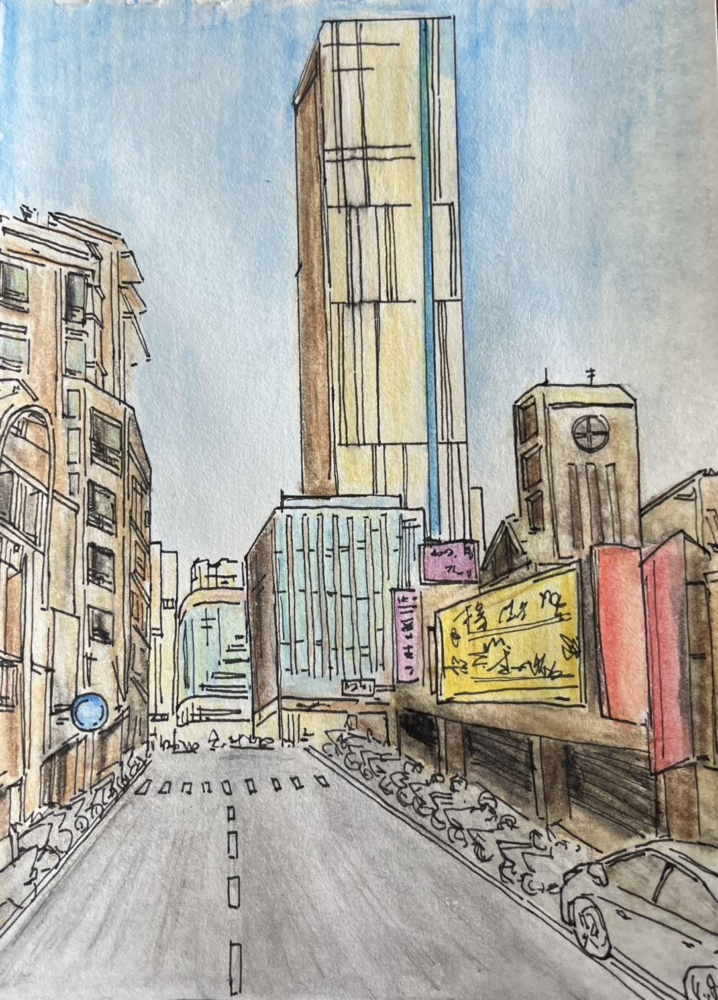
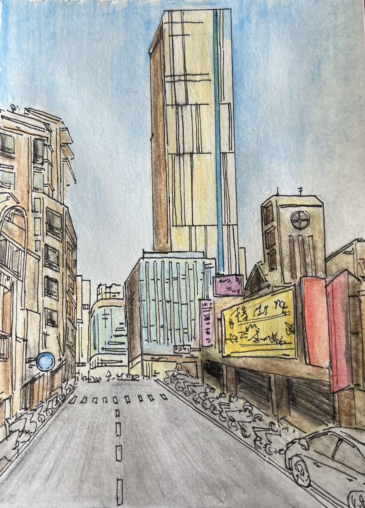

國立金門高中 - 陳民桓
作品集
東海大學建築系
網站導覽指南
歡迎來到陳民桓的線上作品集！
您可以使用上方的導覽列或下方的「目錄」快速跳轉至不同作品區塊。
點擊頁首右上角的 / 圖示，可以切換網頁的彩色或黑白顯示模式，體驗不同的視覺風格。
作品集中的所有圖片都支援點擊放大預覽。在放大模式下，您可以使用按鈕或滑鼠滾輪進行縮放，拖曳圖片進行移動，方便您仔細觀看作品細節。
自我介紹

我是陳民桓,一位土生土長的金門人。父母教育方式開明,從小就尊重並支持我的興趣與志向,讓我能自在探索、勇於嘗試,逐步培養出獨立思考與自我規劃的能力。
我性格細心有責任感,對美術與設計充滿熱情,善於觀察細節、思考空間與人的互動。高中三年,我積極參與建築模型製作與 3D 建模練習,培養空間感與構造邏輯,也熱愛將生活靈感轉化為創作。
我樂於學習、勇於挑戰,曾參加辯論社鍛鍊表達與思辨能力,也在童軍社中學會團隊合作與解決問題。我原本容易緊張,也不太敢在團隊中表達想法,擔心影響他人,後來參加加辯論社後,我學會冷靜應對壓力、清楚表達觀點,逐漸變得有自信也更受同儕信任。
雖然我有時對細節過於要求,導致行事較慢,但在家人全力支持下,我學會平衡效率與品質,並不斷成長。未來我希望能留在家鄉,投入公共空間規劃與文化保存,為地方注入新生命。
建模作品
校園設施改造

候車亭設計
坐的裝置

迷宮
設計心得 | 空間的思考與實踐
在迷宮、公車亭與坐的裝置三項以依照現實情況改造學校現況為發想的建模設計中,我嘗試從不同尺度與角度探索空間與人的關係。作品依照和周邊建築相對的現實比例製作,迷宮作品讓我思考動線與引導,公車亭則著重於遮蔽、通風與光影的平衡,而坐的裝置則聚焦於人的尺度與停留的質感。這些設計經驗讓我學會如何從概念出發,進而整合功能與形式,並透過建模將設計具象化,為我日後的建築學習打下堅實基礎。
日式住宅外觀設計


我以日式建築的簡約精神為出發點,融合木格柵、自然採光與綠化元素,延伸出兼具美感與實用的住宅外觀形式。
半開放式的柵欄圍牆界定出庭院空間,模糊了室內與戶外的界線,提升空氣流通與光影變化。建築立面設有大面積開窗與落地窗,引入充足自然光,使室內與庭院景觀產生強烈的視覺連結。
木格柵元素廣泛應用於陽台與停車棚,兼具遮陽與隱私功能,展現材料的溫潤質感。燈光設計則透過LED燈帶與庭園燈,營造出夜間溫馨的氛圍。整體設計強調建築與自然的對話,展現出靜謐、通透而富層次的生活場景。
繪圖作品
日與夜的空間想像

透過電繪表現,我描繪了所設計住宅在日與夜兩種情境下的空間氛圍。日景圖呈現建築與自然光的互動,強調開放性與通透感;夜景則透過燈光層次與陰影變化,營造溫暖而靜謐的居住氛圍。這兩張圖不僅展現建築在不同時間中的表情,也強調了空間如何回應光線、情境與使用者的生活節奏,反映我對建築氛圍與居住感受的細膩關注。
手繪觀察, 構築感知

 

透過素描、自畫像與建築速寫,我訓練自己對比例、光影與結構的敏銳度。手繪讓我更直接地觀察世界,也強化我在建築設計中對空間與細節的掌握。這些作品是我理解形體、構圖與人與建築關係的起點。
攝影作品
光影中的設計筆記

我熱愛光影從我的眼前渲染,所以我也熱衷於將這些瞬間定格。在記錄有趣的事實的同時,我也會在手機的記事本APP跟紙筆記錄這些有機的構成背後的巧思或我因此想到的創意。透過攝影,我可以很輕鬆的把世界的有趣一面,轉化為我設計有用又巧妙的設計的素材。
光影為筆, 構築為詩


我渴望進入貴建築學系,因我對光影的捕捉解讀與有機構成的分析能力,能為學習建築奠定基礎。我希望能系統學習結構、材料與空間佈局,從而主動「設計」光影而非僅僅記錄,創造出兼具實用巧妙與詩意美感的建築。我深信建築是技術與藝術的融合,而光影便是我理解這門綜合藝術的獨特視角。
實體作品
設計與材質探索
建築模型：這些作品展示了我對材質、形式與功能的深刻理解。在1/20比例的建築模型中,我以冰棒棍和風扣板模擬木質材質,創造出自然、溫暖的氛圍。圍牆設計靈感來自校園老舊圍牆,並以現代語言重新詮釋,賦予空間新生命。
生活科技作品：在生活科技課程中,我製作了鉛筆盒與筆筒,強調精確的切割與榫卯結構,並在筆筒中加入巧思,將底蓋延伸並挖槽,讓其同時具備放筆與放手機的功能,增強設計的實用性與生活化。
材質探索：此外,我也探索了合用紙片製作的球體,進一步研究材料的變化與結構表現。這些作品展現了我對創意設計、功能性與美學平衡的探索,並反映了我如何將設計理念具體實現。